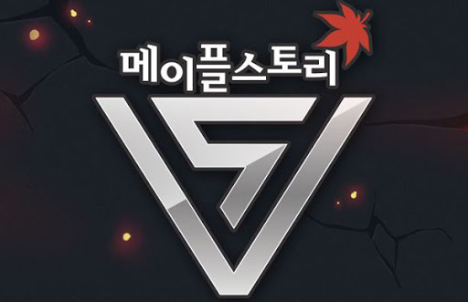

메이플스토리의 주 무대가 되는 곳. 그리고 여러 시대나 문화가 합쳐진 '하이브리드 세계'. 태어나자 마자 거울세계에 갇힌 새로운 시간의 초월자나 아예 사는 세계가 달랐던 노바족 캐릭터들과 레프족 캐릭터들, 다른 세계에서 온 모험가들, 프렌즈 월드 스토리 출신인 키네시스를 제외한 캐릭터들의 출신지이기도 하다. 끊임없이 전쟁을 치르다 제른 다르모어에 의해 멸망하기 직전인 그란디스와 달리 명목상이나마 메이플 월드 전체를 아우르는 황제가 존재한다
제로의 스토리에서 그란디스와 메이플 월드가 하나로 합쳐지고 있다는 것이 밝혀졌다. 한 세계에는 각 영역마다 한명의 초월자가 필요한데 어떤 이유로 초월자가 탄생하지 못하면 세계가 불완전해지고 불완전해진 세계는 자연히 초월자가 존재하는 세계를 찾아내 결합하게 된다고 한다. 결합이 시작되어도 새로운 초월자가 탄생한다면 결합이 깨지게 되지만 메이플 월드는 이미 초월자들이 사라진지 수백년이나 지났기 때문에 초월자들의 봉인이 풀리고 새로운 초월자가 탄생했어도 결합이 진행되고 있다.
엎친데 덮친격으로 프렌즈 월드의 하얀 마법사의 계략으로 프렌즈 월드와 메이플 월드 간에 통합도 진행되기 시작했으며 그란디스와의 통합과는 비교가 되지 않을정도로 빠르게 통합되고 있다. 이후 아케인 리버의 검은 태양에서 검은 마법사가 사망함에 따라 당분간의 평화를 쟁취했다. 메이플 월드만의 문제는 해결되어 수백 년 전의 전쟁과 기아, 가난과 고통은 이제 옛 말이 된 셈. 물론 세계가 융합되는게 멈추지 않아 언젠가 그란디스와 동화될 예정이었다. 본래 태초에는 하나의 세계였으며, 세계가 혼돈으로 혼란스러워지자 오버시어가 질서와 통제를 위해 초월자를 만듦으로써 세 세계로 분리된 것이다. 즉 세 세계가 통합되어지는 현상도 초월자들의 공백이 생겼기에 나타나는 현상이며, Borderless에서 하인즈가 그란디스와의 결계의 봉인을 품으로써 결국 하나로 합쳐졌다.